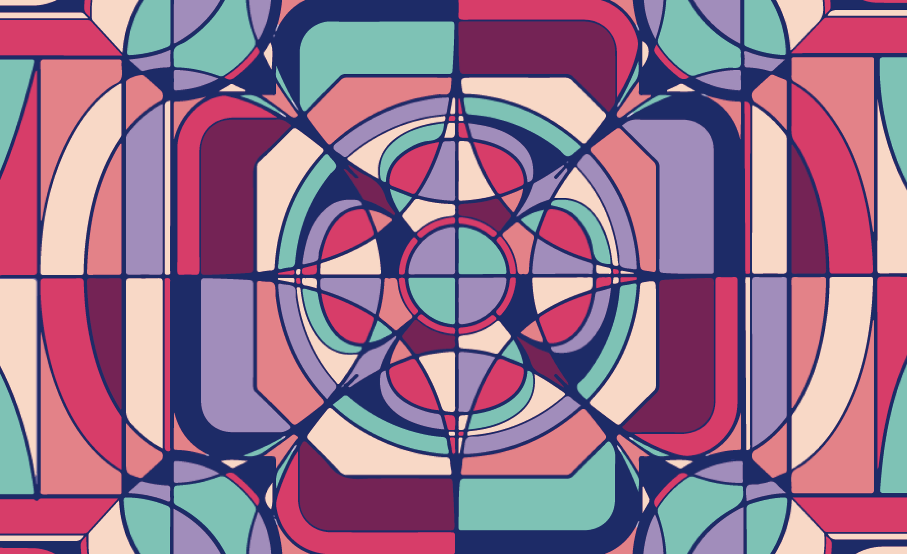
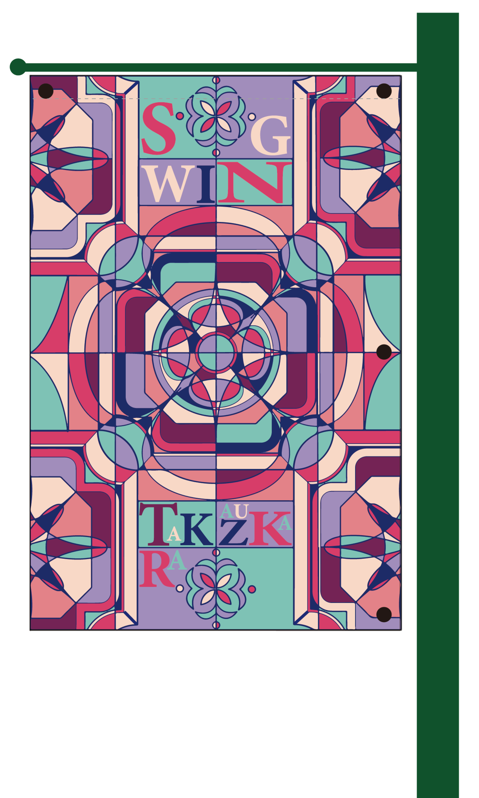
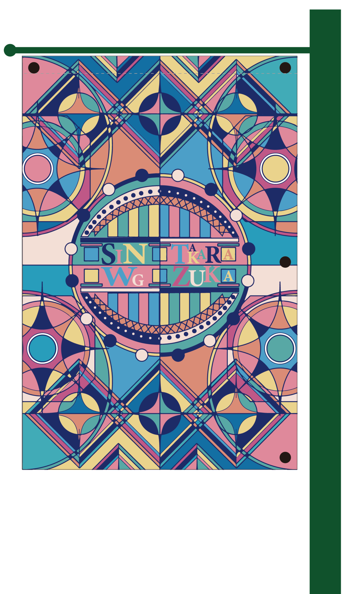
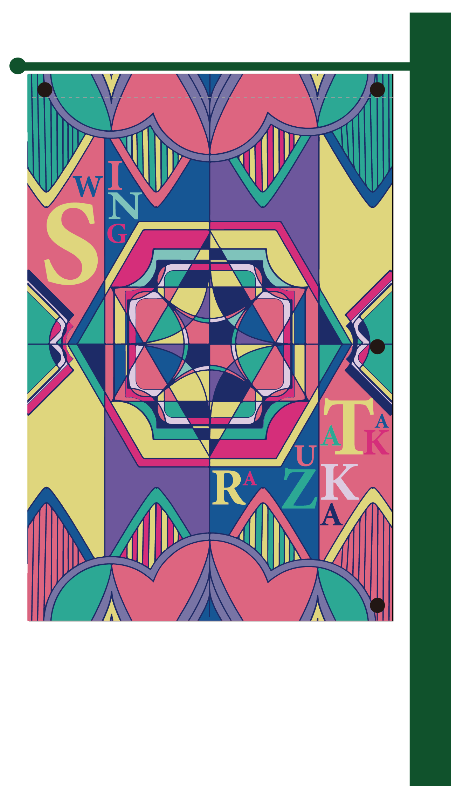

アートフラッグ｜宝塚「花のみち」
宝塚市の「花のみち」を彩るアートフラッグを制作しました。 宝塚を象徴する花・水・山をモチーフに、ステンドグラスを思わせる幾何学的な表現を採用。 モチーフごとに色彩を使い分けることで自然の美しさを表現し、街並みに調和しながらも印象に残る ビジュアルを目指しました。
Role
- Visual Design
- Graphic Design
Tools
- Illustrator
- Photoshop
- Procreate
Period
- 2022.09 – 2022.11
Category
- Public Design
- Exhibition Design
01
Flower Flag

02
Water Flag

03
Mountain Flag
